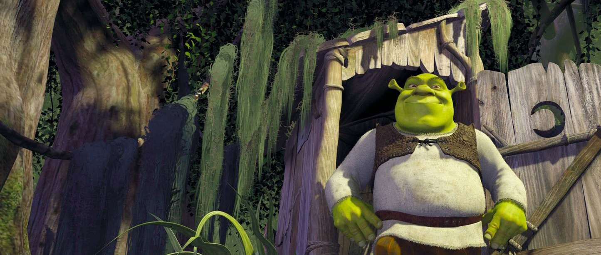
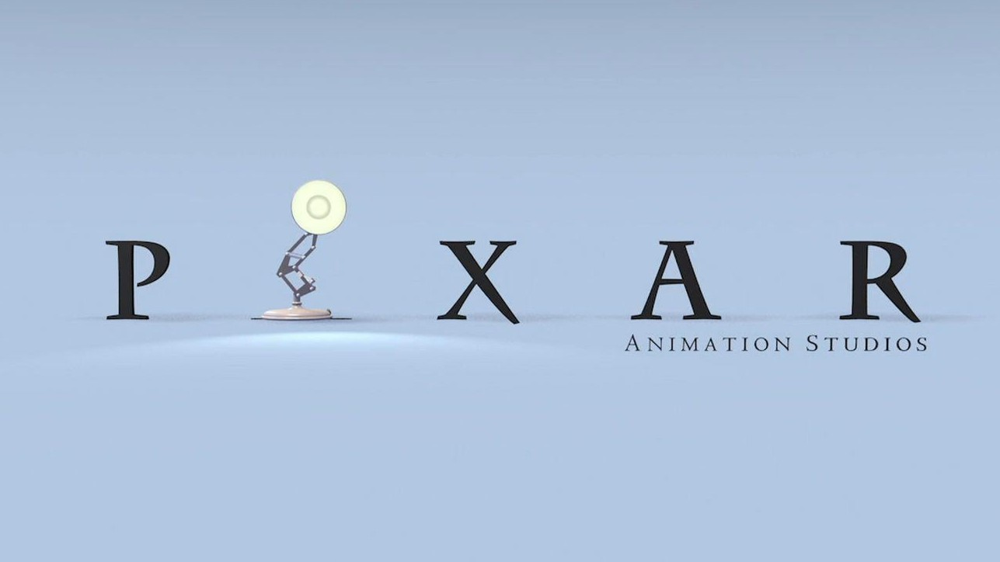
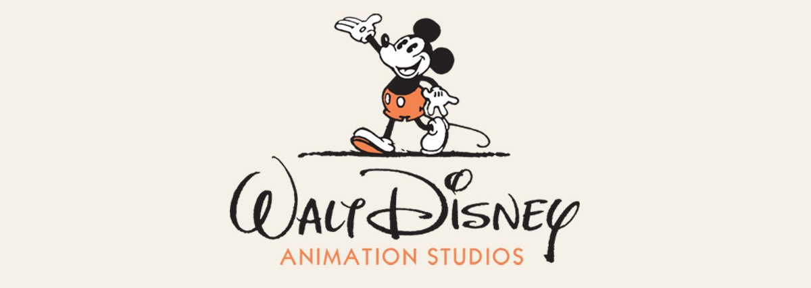
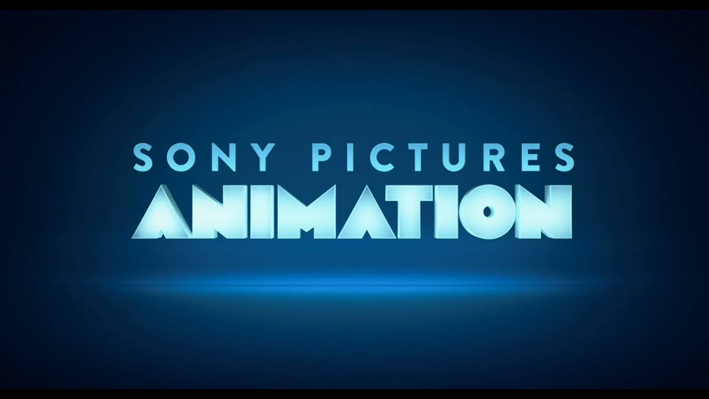

Gli studi di animazione
con più candidature







Anno di nascita: 1986
Casa di produzione cinematografica statunitense specializzata in animazione digitale, con base a Emeryville, in California.
Nata come un reparto d'animazione della Lucasfilm, è stata resa indipendente e rinominata Pixar nel 1986 e dal 2006 appartiene a The Walt Disney Company. È stata la prima casa cinematografica ad aver sviluppato un lungometraggio interamente in computer grafica (Toy Story, 1995), e ha festeggiato nel 2026 i quarant'anni di attività.
Anno di nascita: 1923
Studio d'animazione statunitense di proprietà della Walt Disney Company, il più antico al mondo ancora in attività. Ha sede all'interno dei Walt Disney Studios a Burbank, in California.
Dalla sua origine, lo studio ho prodotto 64 lungometraggi, da Biancaneve e i Sette Nani (1937), il primo lungometraggio animato della storia, a Zootropolis 2 (2025), oltre a centinaia di cortometraggi.
6 film candidati dal 2016:
Anno di nascita: 2018
Studio di animazione americano, sussidiaria di Netflix, produce e sviluppa principalmente lungometraggi, serie animate, miniserie animate e special, tutto distribuito sulla piattaforma di streaming di Netflix.
Lo studio ha prodotto 18 lungometraggi, il primo dei quali è stato Klaus, uscito il 15 novembre 2019, e l'ultimo è In Your Dreams - Continua a sognare, uscito il 14 novembre 2025.
Anno di nascita: 1994
Casa di produzione cinematografica statunitense. Specializzata nell'animazione tradizionale e in CGI, è considerata una pioniera dello sviluppo tecnologico dell'animazione.
I primi film firmati dalla DreamWorks Animation, entrambi del 1998, sono Z la formica, realizzato in CGI, e Il principe d'Egitto, dallo stile d'animazione tradizionale. Galline in fuga (2000) è il primo film dello studio realizzato con la tecnica del passo uno e il primo realizzato in collaborazione con la Aardman Animations. Nel 2001 è stata la volta del blockbuster Shrek, grazie al quale lo studio ha ottenuto il primo Oscar per il miglior lungometraggio d'animazione.
Anno di nascita: 2002
Casa di produzione cinematografica statunitense divisione della Sony Pictures Entertainment che produce film di animazione in computer grafica.
Lo studio ha prodotto 31 lungometraggi, il primo dei quali è stato Boog & Elliot a caccia di amici, uscito il 29 settembre 2006, e il più recente è Goat - Sogna in grande, uscito il 13 febbraio 2026. il recentemente premiato KPop Demon Hunters è il titolo più visto su Netflix, nonché il primo film di Netflix a raggiungere la vetta del botteghino.
Anno di nascita: 1985
Casa di produzione cinematografica d'animazione giapponese con sede a Koganei, Tokyo, lo studio è universalmente riconosciuto come uno dei più influenti e acclamati pilastri della storia del cinema mondiale. Il successo e l'identità artistica dello Studio Ghibli sono indissolubilmente legati alle figure dei suoi fondatori, in particolare a Hayao Miyazaki.
Nel corso della sua storia, lo studio ha prodotto ventiquattro lungometraggi, la maggior parte dei quali ha riscosso un enorme successo di pubblico e critica in tutto il mondo. Tra le pellicole più celebri si annoverano Il mio vicino Totoro (1988) (il cui protagonista è diventato il logo stesso dello studio), Principessa Mononoke (1997), Il castello errante di Howl (2004) e La città incantata (2001), quest'ultimo vincitore dell'Orso d'oro al Festival di Berlino nel 2002 e del Premio Oscar come miglior film d'animazione nel 2003.
3 film candidati dal 2016:
Anno di nascita: 1972
Studio di animazione britannico vincitore di più premi Oscar con sede a Bristol, in Inghilterra. È famosa per la sua animazione stop-motion denominata claymation, in particolare per il suo duo di plastilina Wallace e Gromit.
I film della Aardman sono stati costantemente ben accolti. I loro film in stop-motion sono tra i più redditizi mai prodotti, con il loro debutto del 2000, Galline in fuga, che è il loro film con il maggior incasso, nonché il film in stop-motion con il maggior incasso di tutti i tempi.